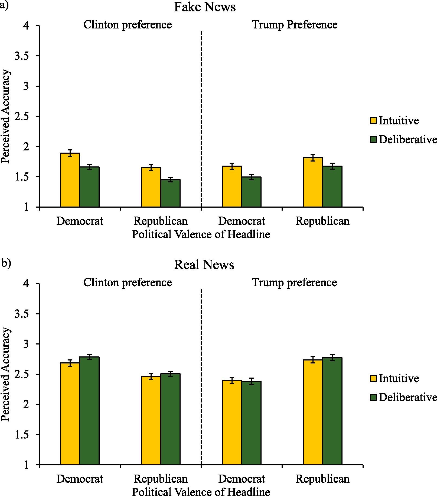

“People Fall for Fake News Because They Fail to Think” — How Reflecting Beats Partisan Clickbait
Is your first instinct after reading this headline to share—or to question? You might think “No way, that can’t be real.” But why? Is it because you support Donald Trump, or because the story simply feels far-fetched? That gut reaction tells something important about how we process news.
That eye-catching headline was one of the democrat-aligned fake headlines used by Pennycook and Rand. In their paper “Lazy, not biased: Susceptibility to partisan fake news is better explained by lack of reasoning than by motivated reasoning,” they argue that people fall for fake news not because they are politically biased, but because they fail to engage in analytical thinking.
Why Do Fake News Stick?
After the 2016 U.S. election, the top 20 fake-news stories on Facebook saw more engagement than the top 20 real ones (Silverman et al., 2016). Two big theories raced to explain why:
Motivated reasoning suggests that when we think hard, we actually twist facts to fit our political perspective — accepting claims confirming our beliefs and dismissing inconvenient truths. For example, studies show this approach works for the topics like climate change (Kahan et al., 2012) or gun control (Kahan et al., 2017).
Classical dual-process theory says analytic thinking simply helps us spot nonsense, regardless of ideology. Typical examples include rejecting paranormal claims (Pennycook et al., 2012) or conspiracy theories (Swami et al., 2014).
So, does analytical thinking help or hurt?
But first, what is it to “think analytically”?
Pennycook and Rand measured analytic thinking with the Cognitive Reflection Test (CRT), featuring puzzles such as:
A bat and ball cost $1.10. The bat costs $1.00 more than the ball. How much is the ball? (Frederick, 2005)
If you reflexively answer 10 cents (which is wrong, because if the ball cost 10 cents, the bat would have to cost $1.10 and they would total $1.20), you’re relying on intuition. If you pause and reflect, you arrive at the correct 5 cents. High CRT scores signal a willingness to override gut instincts and think analytically. The same applies when judging news.
Testing Two Theories
To see whether “thinking harder” helps or hurts, Pennycook and Rand recruited large samples - 800 participants in the first study and 2 644 in the replication - of Clinton and Trump supporters. They showed each person a Facebook-style feed of real and fake headlines split into democrat-friendly, republican-friendly, and neutral categories. Participants first judged how accurate each headline felt and whether they would share it, and then took the short CRT.
Three Patterns Defined
1. High-CRT readers were consistently better judges—no matter whose side the headline favored.
Whether a headline praised Clinton or Trump made no difference: high-CRT readers doubted fakes and trusted reals (Fig. 1). The same reflective habit also made them less willing to pass fakes along on social media.
2. People judged headlines that matched their politics a bit more accurately
That feels like motivated reasoning—but they were also stricter with same-side fakes. There is simply more background knowledge about familiar topics. Simply saying, democrats spotted democrat-friendly fakes better than cross-party ones, while Trump supporters showed little or only modest advantage for their own-side fakes.
3. Overall, Clinton supporters out-performed Trump supporters at telling real from fake.
Interestingly, participants preferring Clinton over Trump showed generally stronger truth-discernment than Trump supporters. However, this ideological difference was significantly smaller than the difference created by varying levels of analytical reasoning.

Are Fakes Obviously “Fake”?
A previous study by Pennycook et al. (2018) confirmed that viral fake news are usually largely implausible. To check if plausibility is actually a stimulus for analytic thinkers, in Study 3 authors ranked headlines from “sounds crazy” to “sounds reasonable”. In short, the wilder the headline, the more reflection helps, regardless of political flavor —just what the classical reasoning account predicts.
Try it yourself:
“Because Of The Lack Of Men, Iceland Gives $5 000 Per Month To Immigrants Who Marry Icelandic Women!” vs. “Yellowstone Evacuated: Experts Claim ‘Super Volcano’ Could Erupt Within Weeks”.
Which one seems more believable? Both are false, but I would assume readers may laugh at the first and pause at the second—and that pause is exactly what the CRT picks up. The paper gives average plausibility scores but does not publish a full “craziest-to-most-believable” ranking, so this Iceland-versus-Yellowstone contrast is illustrative rather than official.
The results of analyses match the classical model - reflection filters out nonsense, it doesn’t reinforce bias. But why didn’t motivated reasoning show up here? Previous work showing that reflection deepens political divides often focused on complex topics—e.g., climate science or gun statistics (Kahan et al., 2012; Kahan et al., 2017) —where even the most motivated reader sometimes lacks the background to evaluate claims. Fake-news headlines, by contrast, are typically loud and implausible by design. And if we bother to think, we can actually realize something is off (“Why would Iceland pay immigrants to marry women?”).
Implications
Pennycook and Rand’s work suggests that nurturing critical thinking may be a good defense against misinformation. Some practical implementations following from the paper may be as follows:
Think-twice prompts. A quick “Are you sure?” before the Share button can trigger reflection.
Micro-training. Five-minute CRT-style quizzes teach the pause habit.
Plausibility flags. Down-ranking headlines that scream “too good to be true” gives users room to think.
Future Work
Frame the question differently. Swap “Is this accurate?” for “Do you believe this?”—the authors expect political bias might re-appear.
Add identity cues (“Friends shared this”) or a quick warning (“Some stories are false”)—do they blunt or boost reflection?
Test outside the lab. Running the study in live social-media feeds or in other political systems will show if the “lazy, not biased” pattern remains.
Takeaway
When it comes to eye-popping political headlines, the problem isn’t people’s partisan identity—it’s the mental autopilot that lets a sensational claim sail past unexamined. Lazy, not biased. So, when we pause to think, political color of a headline matters far less than plausibility—and most fakes crumble.